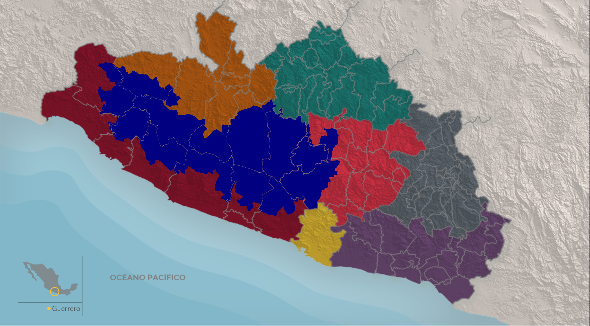

Los grupos étnicos prehispánicos representaban sus poblados con diferentes glifos de acuerdo a las características naturales de su entorno y servían de referencia en su localización, volviéndose símbolo de identidad.
En el actual Estado de Guerrero, muchos municipios conservan su nombre prehispánico y con ello su topónimo.
Elige por región para conocer algunos de estos.